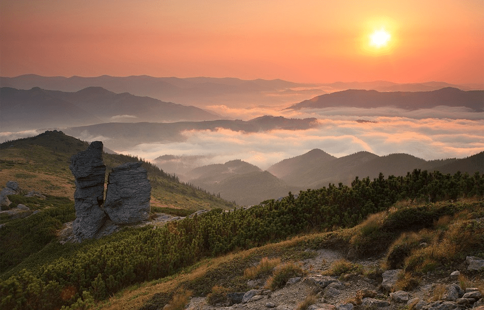

Щоб побачити печери, каньйони, рожеві озера та величезні скелі не треба їхати за кордон.
Оптимістична печера
Тернопільська область

Оптимістичну печеру відкрили у 1966 році, знаходиться вона у Борщівському районі Тернопільської області неподалік села Королівка.
Це найдовша гіпсова печера у світі: довжина — близько 260 км. Вона досі повністю не досліджена, в експедиції сюди приїжджають спелеологи з усього світу. Всередині печери лабіринти, багато мінеральних утворень (кристалів, сталактитів, геліктитів) та навіть підземні озера. Подивитись є на що.
Потрапити на екскурсію та побачити усе на власні очі це цікаве місце може кожен охочий. Є офіційний айт з усією необхідною інформацією: як доїхати, де жити, яке спорядження потрібно, фото та відео звіти.
На сайті можна вибрати екскурсію, є різні рівні складності: найлегші ознайомчі екскурсії підійдуть навіть для дітей, також є маршрути середньої складності та екстремальні та довгі маршрути для досвідчених та витривалих.
Тустань
Львівська область
Тустань — наскельне місто-фортеця, яке було оборонним та адміністративним центром протягом 9-15 століть. Це однозначно одне з найцікавіших місць Україні. Знаходиться Тустань неподалік села Урич у Сколівському районі Львівської області. Заснували місто племена хорватів, потім його завоювали поляки, а з кінця 16 століття Тустань почала занепадати та згодом залишились лише кам’яні основи фортеці. Завдяки дослідженням та археологічним розкопкам вченим вдалось відновити графічну реконструкцію фортеці з точністю майже 90%.

У 1994 році задля збереження наскельного комплексу було створено національний історико-заповідний комплекс, зараз це популярне туристичне місце. З 2012 року тут щороку проводиться фестиваль української середньовічної культури «Ту Стань!».
Місце справді дуже гарне й захоплююче. З оглядового майданчика на скелях відкривається неймовірно красивий краєвид. А навколо є зручний пішохідний маршрут. До речі, в нас є готовий маршрут Західною Україною, до якого ми включили Тустань.

Вухатий Камінь
Івано-Франківська область
Вухатий Камінь — це мальовнича гора у Карпатах у масиві Чорногори, що знаходиться у Верховинському районі Івано-Франківської області, висота — 1864 м над рівнем моря. Гора цікава тим, що на вершині є скелі чудернацької форми — улюблене місце для перепочинку та фотографій усіх туристів. А ще з Вухатого Каменя відкривається неймовірно гарнийкраєвид на Карпати.
Через гору проходить маршрут з села Дземброня на вершину Чорногірського хребта, також через Вухатий Камінь можна пройти на гору Піп Іван. Ще одна атракція — Дзембронські водоспади, які знаходяться на північно-східному схилі гори.
Лемурійське озеро
Херсонська область

Одне з найгарніших і незвичайних місць України – рожеве озеро. Лемурійське озеро на Херсонщині називають українським Мертвим морем: солоність озера сягає позначки 300 грамів солі на літр води, що на 50 грамів більше, ніж у Мертвому. Рожевий колір з’являється завдяки водоростям Дуналіелла, які під дією сонця виробляють речовину, яка фарбує воду: чим спекотніше літо, тим більш насичений рожевий колір має вода.
У озера цікава історія: у 1969 році в озеро Сиваш впав радянський літак і утворив дуже глибоку яму, яка почала наповнюватись водою набагато солонішою, ніж у Сиваші. А назву озеро отримало на честь міфічного континенту Лемурія, який начебто колись затонув в Індійському океані. Лемурійське озеро приваблює багато туристів завдяки своєму незвичайному вигляду та лікувальній воді. Відвідування Лемурійського озера можна поєднати з іншими цікавими місцями Херсонської області – ось тут готовий маршрут Півднем України.